Scene 1Warm-Up
▶ Start hereHow your Wonder Films lessons work1-minute videoOpen ▾
🎯 TodayI can…
- explain what phototropism is and why plants do it.
- analyze day-by-day data to identify a plant growth pattern.
- use evidence to explain how growing toward light helps a plant survive.

🔎 Mystery specimenWhat are these seedlings doing by the window?
What to do: Press Inspect specimen. Move the magnifying lens over the plant, then tap 3 things you notice.
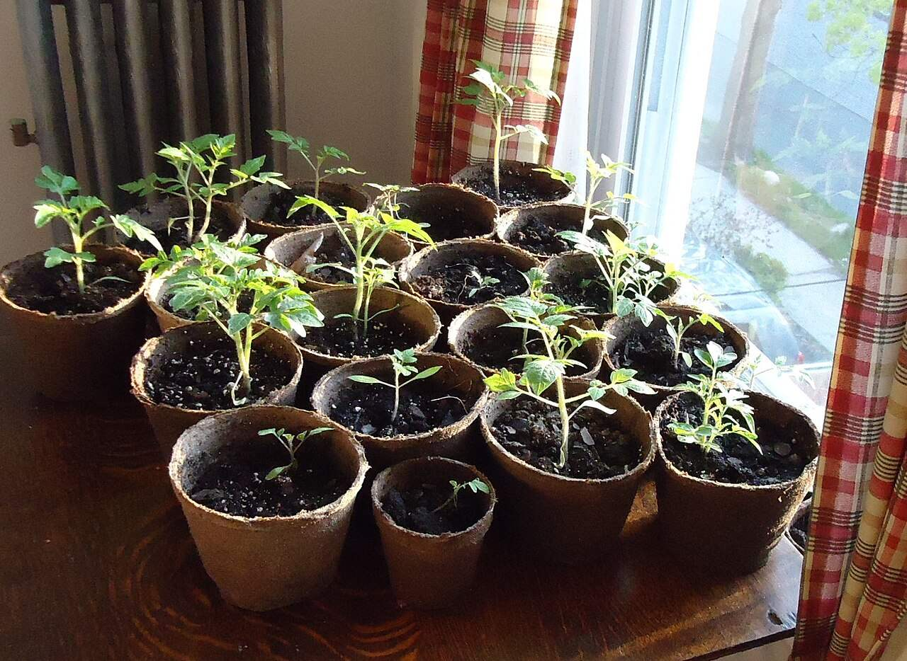
📚 Word WallWords scientists use
What to do: Tap or click each card to flip it and read what the word means. Tap 🔊 to hear the word.
Scene 2The Lesson
🌱 Part 1Plants Can't Walk, But They Can Grow
When light shines from one side, a plant can't pick up its roots and walk toward it. But it can slowly grow in that direction.
This is called phototropism. "Photo" means light. The stem and leaves bend toward the light. It happens over hours and days, too slowly to see while you watch.
🎞️ Put the scenes in orderHow does a plant by a window change in one week?
What to do: Drag each photo into the film strip, from first to last. You can also tap a photo, then tap a frame. Get the order right and your strip becomes a movie.
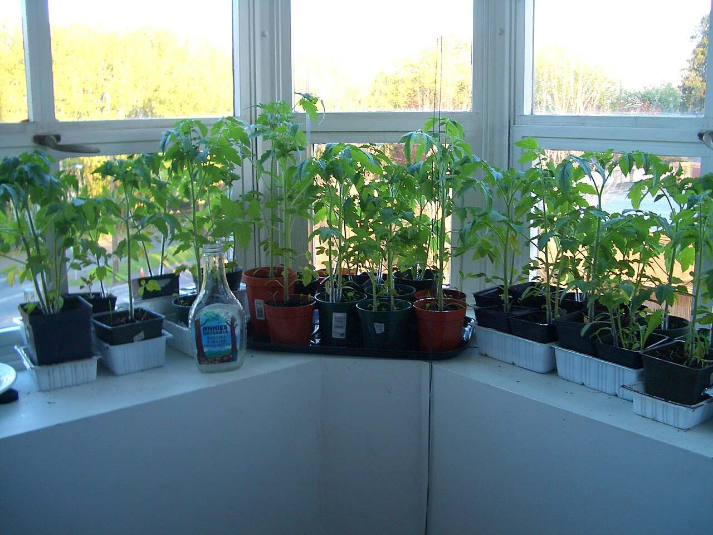
Could you sit by the window and watch the stem bend while you wait?
🔦 Part 2Light Is the Stimulus
A stimulus is something in the environment that causes a reaction. For a plant near a window, light is the stimulus.
The plant's response is to bend toward the light. The plant doesn't decide to do this. Its stem grows a little longer on the shady side, so the stem bends toward the bright side.
Roots are different. They grow down into the soil, because they respond to gravity, not light.
🔦 The Light Direction LabDoes the light's direction change how a seedling grows?
What to do: Follow the steps one at a time. You will pick, test, and then explain.
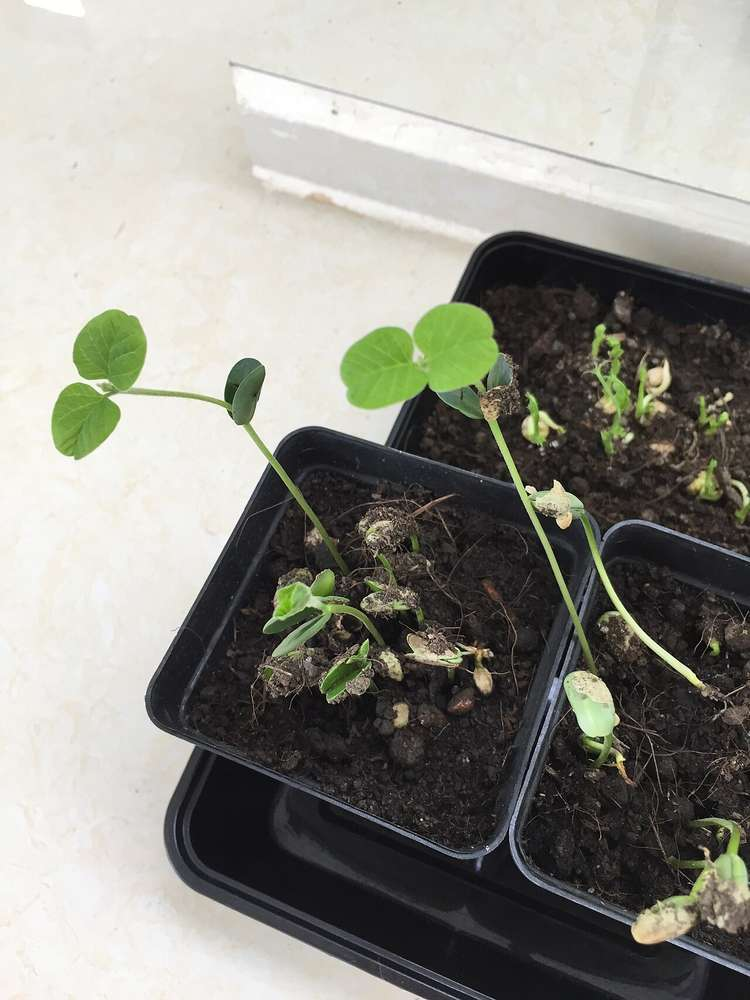
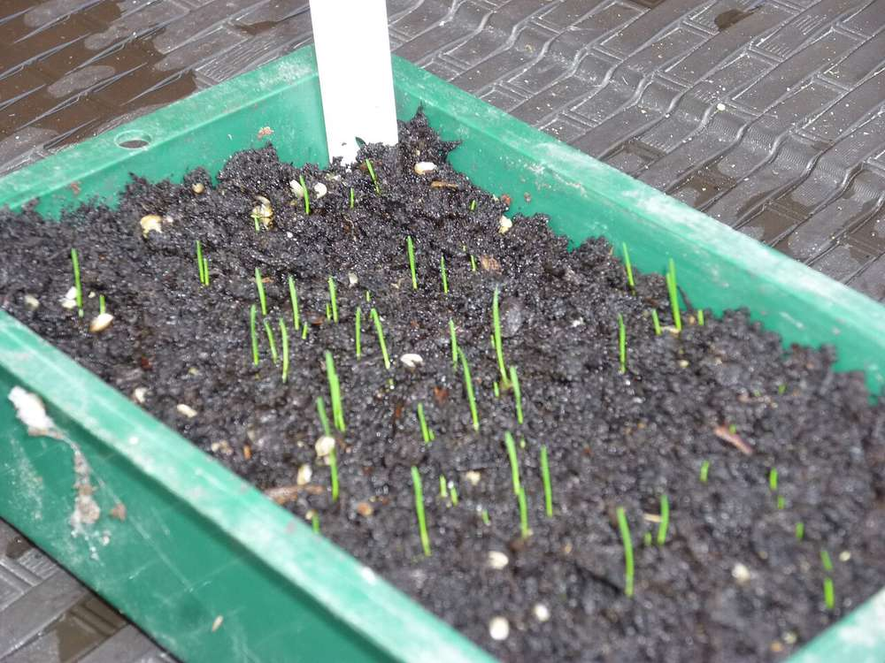
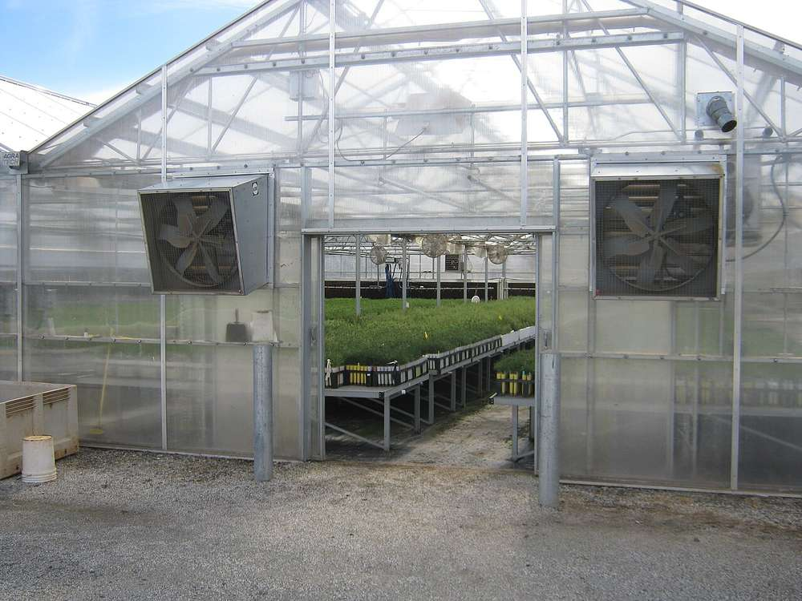
📈 Part 3Evidence in the Data
Scientists observe a plant over several days to find its growth pattern. One day of data doesn't show much. Four or five days together can show a clear direction.
When the stem bends more each day, always toward the same side, that's evidence. Farmers and gardeners use this. They put plants where they'll get the most sunlight.
📦 The plant mazeRide down a maze box, from the light hole to the potato
What to do: First, make a prediction. Then brush the glowing layer: drag across it (or tap it again and again) until the plant shows.
Can the potato's sprout find its way around both shelves to the light hole?
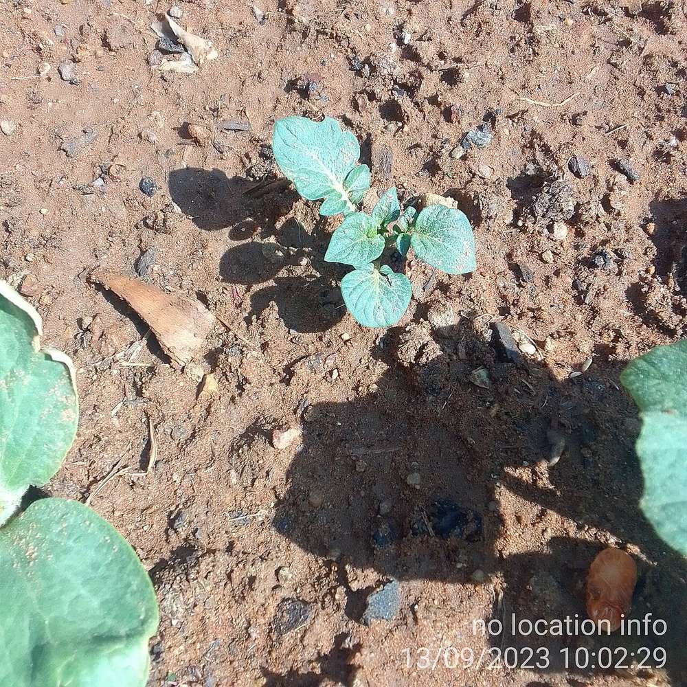
Level 1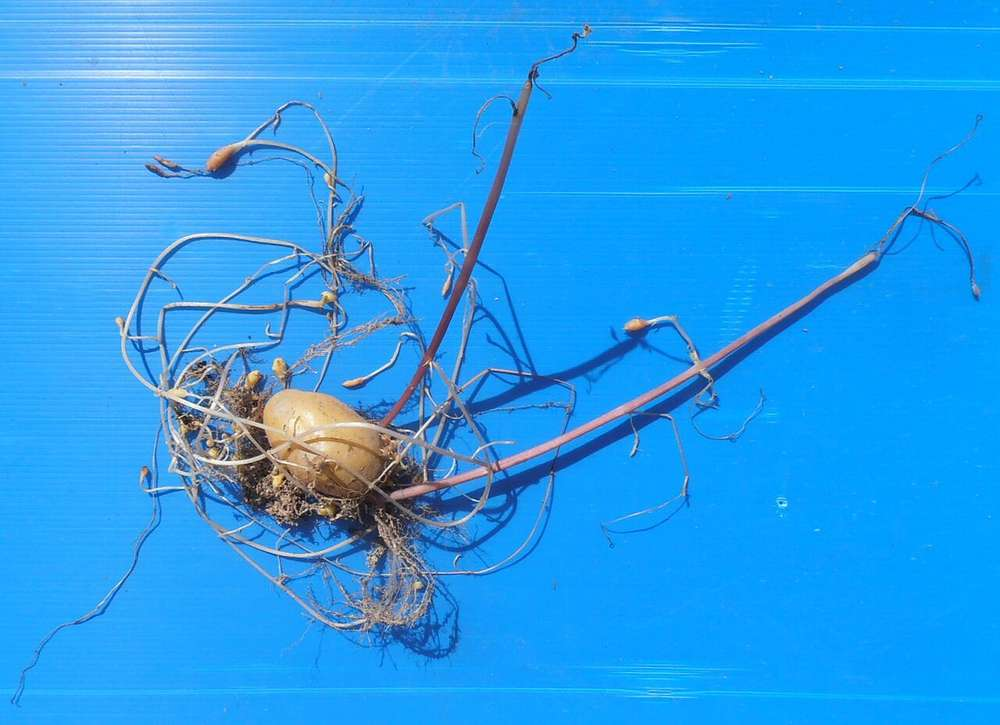
Level 2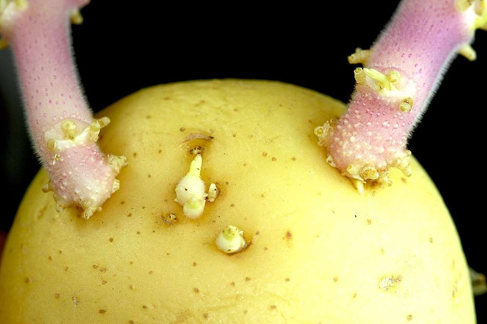
Level 3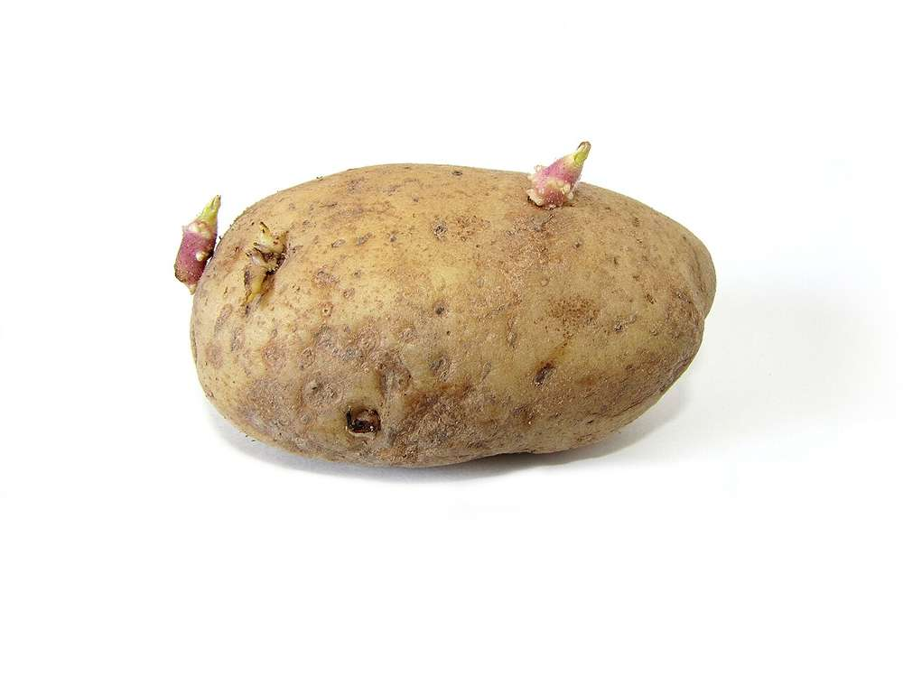
Level 4A sprout keeps growing toward the light, even the long way around. Each turn is a response to the light coming in at the top.
The sprout found its way around both shelves. Did the potato plant decide to go that way?
Darwin's tiny caps
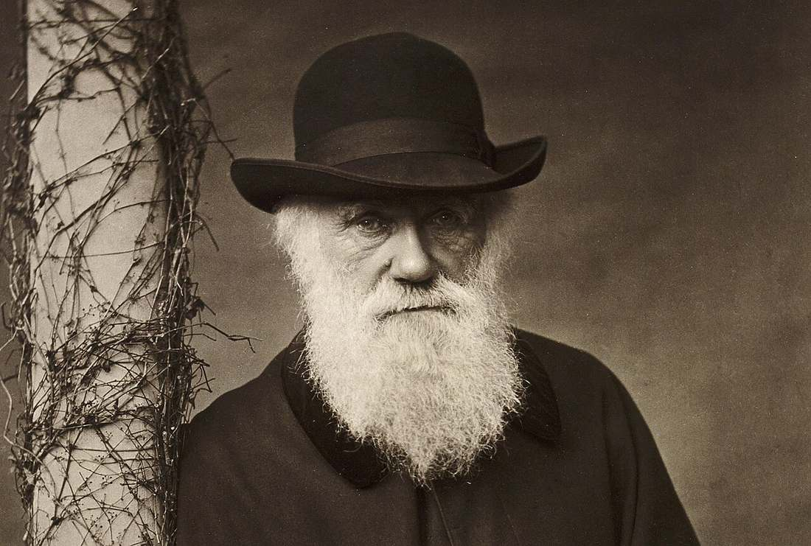
Darwin and his son Francis wondered which part of a seedling notices the light. So they made tiny caps out of tin foil and thin glass tubes painted black. They slipped the caps over the tips of grass seedlings.
When the tip was covered, the seedling hardly bent at all, even though the rest of it was in the light! The tip notices the light, and the bending happens lower down.
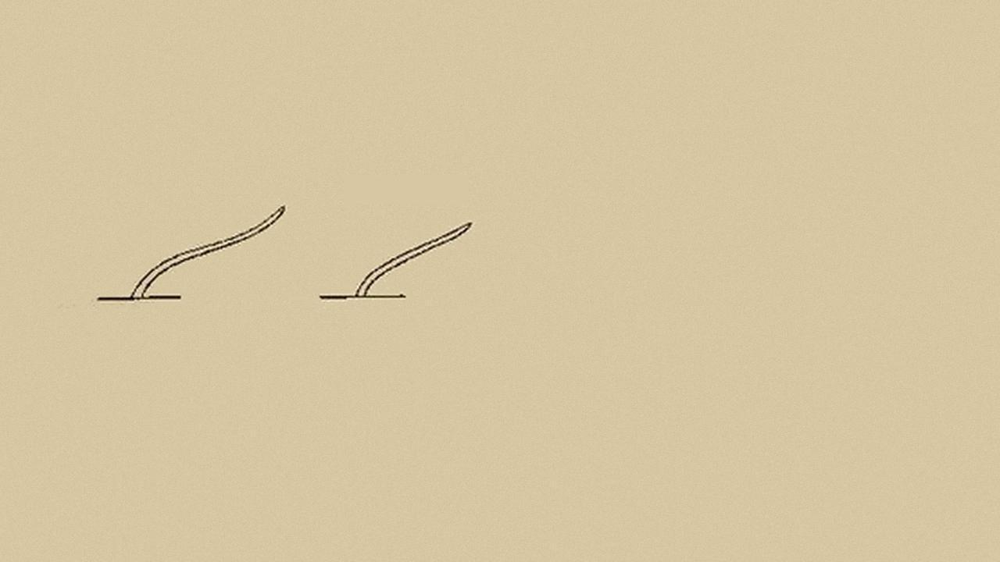
🗂️ Part 4Toward the Light, or Away?
What to do: Pick 3 cards, one at a time. Tap a clue you see, then pick what it is. Predict if it grew toward the light or away from it, and watch its home appear.
| Plant | What I observe | The clue | Toward or away? | My evidence |
|---|
🌍 Rebuild the plant's homeUse your evidence to rebuild the plant's home OPTIONALOpen ▾
What to do: Pick one you solved. Pick the place it points to, then pick the living things that belong there.
Pick one from your chart and explain it.
Start with: "Plant __ has…"
Scene 3Self-Check
What is phototropism?
Which observation is evidence of phototropism?
Why does growing toward light help a plant survive?
Scene 4Assignment
🔍 Part ARead the case file
What to do: Read each one. Pick the best answer, or type your answer.
1. The case file says: Day 1, stem straight up. Day 3, slightly toward the window. Day 5, bent toward the window. Day 7, strongly toward the window. On which day does the stem first show a response to the light?
2. In this investigation, what is the stimulus?
3. On Day 7, someone moves the light to the left side of the plant. What will the stem most likely do over the next few days?
🚀 Part BShort answer
What to do: Answer in complete sentences. Use your science words.
1. How did the plant change from Day 1 to Day 7? Describe at least two things that changed.
2. What is the stimulus in this investigation? What is the plant's response?
✍️ Write and explainWhat caused the plant to bend?
What to do: What caused the plant to bend, and what does that tell you about how plants survive? Use at least one of the science words under the boxes.
Start with: "I think the plant bent because…"
Start with: "I know this because when I looked at the data, I noticed that…"
Start with: "This makes sense because…"
🎨 Part CDraw and label
What to do: Draw the same plant on Day 1 and Day 7, side by side. Put the window on the right. Add arrows that show which way the stem grew.
🎬 Your question from Scene 1Can you answer it now?
What do you still wonder about? Write your question here. Then answer it.
📋 My answersEverything you wrote, in one place
(Your answers show up here as you write.)
How to turn in: Copy your answers and paste them into the Canvas assignment. Or download the file and upload it. Then press Save my drawing in Part C and upload your drawing too.
✅ Checklist
What to do: Tap each item when it is done. Items you finish on the page check themselves.
- My evidence chart has 3 plants and my explanation.
- Part A: all three answers.
- Part B: questions 1 and 2.
- Part C: my drawing and both labels.
- Write and explain, with at least one science word.
🎬 Premiere my phototropism storyYour exhibit
What to do: Check your exhibit. Pick the one you wrote about, add your first name, then press Premiere film.
I observed…
I think it was…
My evidence…
It tells us…
🎞️ This film's frames
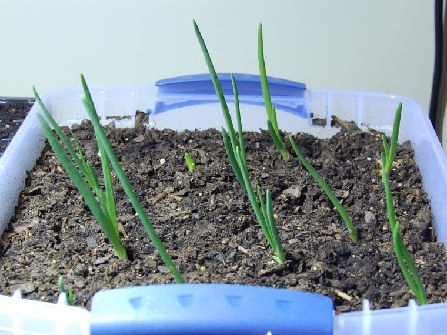
A week by the window
The Light Direction Lab
The plant maze
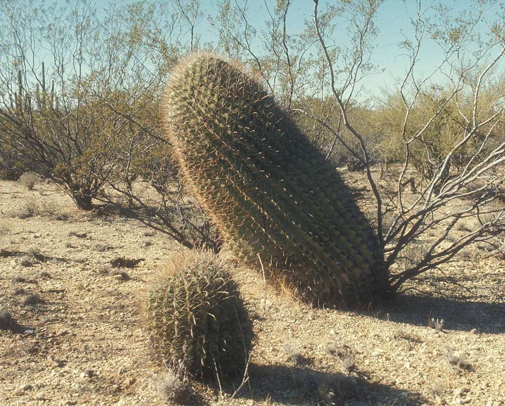
Toward or away?
Earn all four frames in the Lesson, then finish the checklist.
🔜 Coming up next21.01 · How Do Plants Reproduce?
Next time, find out how plants make new plants, with flowers, seeds, and more.
Photo and music credits
- Greenhouses provide seedlings a warm place to overwinter when young (18592627…, Pacific Southwest Region 5, Public domain
- Darwin Movement in Plants, Charles Darwin, LL.D., F.R.S. assisted by Francis Darwin, Public domain
- Soy bean growing seedling, Zenyrgarden, CC BY-SA 4.0
- Barrel Cacti (50618807261), SaguaroNPS, Public domain
- Saguaro National Park Saguaro Landscape 9876, National Park Service Digital Image Archives, Public domain
- Quaking grass seedling 2, Tremello, CC BY-SA 3.0
- Pinto Bean Plant, Datadoggieein, CC0
- Cute bean seedling, Jidanni, CC0
- Onions reach for light, Dennis Brown, CC BY-SA 3.0
- Charles Darwin 1880, Elliott & Fry, Public domain
- Charles Darwin in 1881, Elliott & Fry, Public domain
- Phototropism - geograph.org.uk - 6830805, Bob Harvey, CC BY-SA 2.0
- Woodland edge - geograph.org.uk - 1025384, Helen Wilkinson, CC BY-SA 2.0
- The power of movement in plants (1880), Fig, Charles Darwin, assisted by Francis Darwin, Public domain
- Hedera-helix-aerial-roots, Sten Porse, CC BY-SA 3.0
- Wall with ivy (Hedera helix), Ponte de Sor, Portugal (approx. GPS location) j…, Jules Verne Times Two, CC BY-SA 4.0
- A model: seedlings with their tips capped (drawn for this lesson in the style…, Optima Academy, Optima Academy
- Tomato-seedlings-3805, User:Vmenkov, CC BY-SA 3.0
- Tomato plants grown from seeds near window, Tomwsulcer, CC0
- Potato sprouting, BONGINKOSI, CC BY-SA 4.0
- Potato sprouted, Sarang, Public domain
- Potato-sprouts-base1, Sanjay Acharya, CC BY-SA 3.0
- Potato with sprouts, ZooFari, Public domain
- Wekiwa Run, The original uploader was Mwanner at English Wikipedia., CC BY-SA 3.0
- Wekiwa Springs State Park springs01, Ebyabe, CC BY-SA 3.0
- Music: Pyotr Ilyich Tchaikovsky, Waltz of the Flowers (The Nutcracker), performed by The U.S. Army Band, c. 2019, public domain (Wikimedia Commons).
- Opti the owl: Optima Academy. Sound effects are made by the page. The week-by-the-window movie, the capped seedlings and the plant maze are models; every plant photo is real, and the four order photos show four different plants.